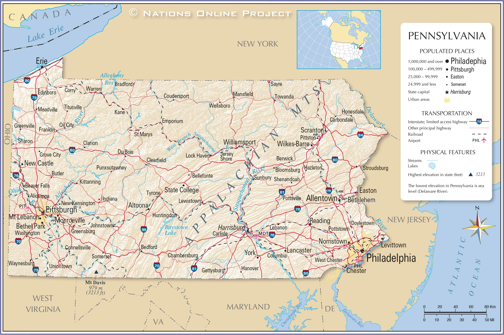
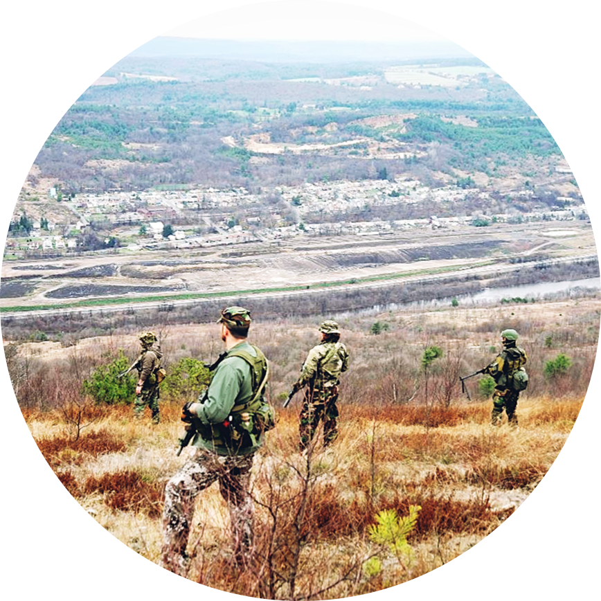
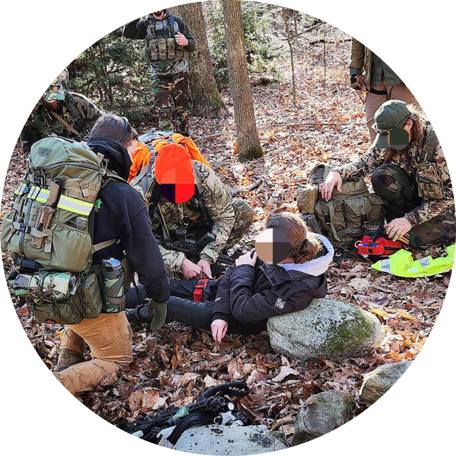

- Who We Are
- Why Join
Mission Statement:
To serve the Commonwealth of Pennsylvania and her citizens,
and to stand ready to assist our communities whenever possible.


The 1st Pennsylvania Mountain Regiment is a volunteer organization dedicated to preserving the family, the community, and the Commonwealth. From conducting civil defense operations search and rescue to assisting in natural disaster recovery, the 1st PMR stands ready to deploy our resources wherever they are needed.
